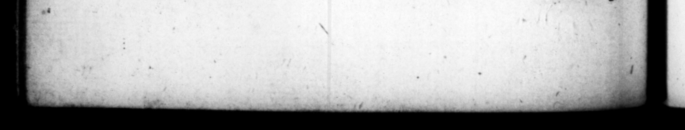

= | - = % _ adopratns eft, Annzoque Seiy peck jaw tunc ſenatori in diſciplinam traditus. Ferunt Senecam proxima note viſum nbi per quietem, C. Czſari . — e : & idem ſomnio cru brevi fecit, prodita immanitate nature, quibus pri$ 5 potuit experimentis. amque Britannicum fratr _ ſe poſt adoptionem ENO %. & juriſdictionem Prefectus f BAKBUM ex conſuetudine ſalutaſſet, ut ſuhditivum ons 8 arguere conatus eſt. Amitam etiam Lepidam, Team 8 coram afflixAt, gratificans matri, 3 rea 0 + hatur, BA in Forum tiro, lo congiarium, militi ati vum propolũit: indictaque decurſione prietorianis, ſcurum ſua manu Nag z. exinde 2 gratias in ſenatu egit. Apud eundem conſulem pro Bono. nmienſibus Latine, & pro Rhodiis atq; Ilicnſibus Grece verba fecit. Auſpicatus eft urbis facro Latinarum, celeberrimis patronis, non tranſtitias, ut aſſolet, & breves, ſed max imas plurimaſque poſtulationes certatim ingerentibus : quamvis interdictum a Claudio eſſer. Nec multo poſt duxic uxorem Oftaviam : ediditque pro Clandit ſalute circenſes, & venationem. after he married Oftavia, and preſented the people with Circenſrall x a 1 G A * 1 4s 4 , l p * * * 7 * * * 5 of \ 0 » 7 * r 1 * 2 * = . « * 4 = proceſſion under arm:, and march/d at " the head of them, with a ſhield in wt _ V WT, 4 % 6s VE þ ad Or - \ Lal 7 F — 338 E C1 Ss migh. Jear Seneca at that time a fm. | ſaid that Seneca dreamt the night after, that he was- giving „ I: Hare ts Caius Ceſar * and Nero quickly we; his dream, be | a am, berry ing preſent ſcooge eradey of bis nary aVage erueity of P15 nature or perfwaide his fat = tured him after bit adoption, by the name of AMnobarous as viſual, Aud when his aunt - Lepida was brought uppen ber tryal, be appeared in aus as an evidence againſt her, to humour his 9 — 405 Way a * enemy to the poor lady). Open bi ſolemn introduction into the forum bd 4 eſs to the proplr am ſoldiers, for the guards he appointed a-ſolemn bis. hand; after which he went to give thanks to his father in the ſe+ nate. Before the ſame, when he made à ſpeech fir © the Bononians in Latin, and for the Rhodians and firſt. time as a judge for the bear Heng. when . was made pre of the city in the latin buly at which time, the moſt celebrat pleaders plicd bm of , not with com» mon. ſb,rt tryals, as uſual in that caſe but with irya!s of importance, and a” ef them, althd* © 1 had been fal. 6 4% 40 by Conte? Not long games, and # hunting of wild beaſis, for the health of Claudius. 8. Septemdecim natus annos, ut de Claudio palam ſactum eſt, inter horam ſextam ſeptienamque proceſſit ad excubitores: cum ob totius diei diritatem non aliud auſpicandi tempus accommodatius videretur: bus 1 MP ERATOR conne Palatii gradi8. He was ſeventeen years old at the death of that prince, and as ſoon «as the ſame was made publick, went owt to the ſoldiers upon the guard be. fore the palace, betwixt the howrs of fox und ſeven ; jor no time of the day be» fore that was 'rudged pr = his engnity, by tering upon the umperi | — the direful omens that appearſalutatus, = he tuitien' of Anew nw to bat his brot he. Britannicus was s po fit itiaus brar, becauſe he 2 ” the '
